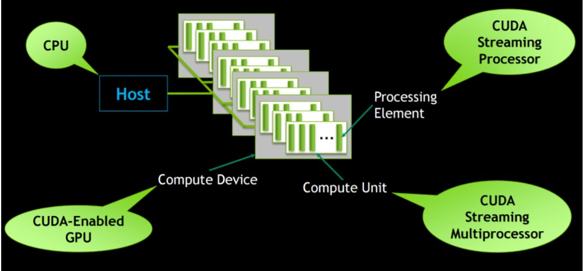

OpenCL 介紹
OpenCL 是一個跨平台可以平行加速的˙一個套件，所以使用前最好有一些平行化的概念，
OpenCL 是Apple出來主導，希望開發者只要熟悉一種用法即可，所以可跨平台，包含iOs, MacOS, Android, Windows CUDA, Windows Intel, Linux
但是 nVidia的TK1, TX1, TX2, 官方似乎無支援，所以這部分可能還是要用CUDA才有辦法做平行化。
在使用類似GPU的套件時，我認為大致上可分成七大步驟
1. 和平台尋求需要的裝置 OpenCL: err = clGetPlatformIDs(0, 0, &num); CUDA: cudaStatus = cudaSetDevice(0);
2. 在Host(CPU)端，allocate CPU記憶體，準備把運算的內容複製到GPU端記憶體的部分
unsigned char* srcImageBuffer = new unsigned char [DATA_SIZE];
3. 將Host的記憶體複製到GPU中的記憶體
OpenCL: cl_mem cl_srcImage = clCreateBuffer(context, CL_MEM_READ_ONLY | CL_MEM_COPY_HOST_PTR, sizeof(cl_uchar)*DATA_SIZE, &srcImageBuffer[0], NULL);
4. 開始讀入文字檔 (OpenCL是用一個叫做 .cl的文字檔，可以稱Kernel，裡面主要寫著需要平行化的程式)，並給GPU用其指令集做編譯
讀進來的文字都用char 儲存，
const char* source = &cldata[0];
將此source放到GPU內去做編譯:
cl_program program = clCreateProgramWithSource(context, 1, &source, 0, 0);
5. 開始計算，把要輸入的參數送到Kernel，並且設定需要平行化的維度和大小，
clSetKernelArg, clEnqueueNDRangeKernel,
6. 將算完的值從GPU的取出
clEnqueueReadBuffer
7. 釋放記憶體
clReleaseKernel, clReleaseMemObject, clReleaseProgram ....
架構可以參考以下的圖片:
OpenCL可以支援不同廠商的裝置

OpenCL的平行化架構和nvidia的CUDA同，由CPU當host作管控，
配置許多需要做計算的部分給GPU，GPU底下則有很多計算的單位，
單一的執行速度可能沒有CPU來的快，但同時可以執行非常多的計算指令，
舉例來說: gtx1080ti的計算單元就高達 3584個，但像i7最多到8核心，只能同時計算8個，

參考資料: https://leonardoaraujosantos.gitbooks.io/opencl/content/chapter1.html
步驟細節說明:
章節 1. 初始化GPU裝置
記得 include cl的頭檔 -> #include <CL\cl.h>
取得程式下有多少的平台 (platform)，通常為1，可能在分布式系統下可以有很多的平台:
err_num = clGetPlatformIDs(0, 0, &num_platforms);
當得到平台的數目後，可以將此平台的數目再次輸入，可以得到此platform的id，並用得到的platform id來創建 context
err_num = clGetPlatformIDs(num_platforms, &platformsIds[0], &num_platforms);
cl_context_properties properties[] = { CL_CONTEXT_PLATFORM, reinterpret_cast(platformsIds[0]), 0 };
cl_context context = clCreateContextFromType(properties, CL_DEVICE_TYPE_GPU, NULL, NULL, NULL);
context可以用來得到device的很多資訊，包含裝置的名稱，記憶體大小，等...
輸出結果:
範例程式:
#include <iostream>
#include <CL\cl.h>
#include &#vector>
int main(int argc, char** argv)
{
cl_int err_num;
cl_uint num_platforms;
err_num = clGetPlatformIDs(0, 0, &num_platforms);
if (err_num != CL_SUCCESS)
{
std::cout << "can't get platforms" << std::endl;
return 0;
}
std::cout << "platform numbers: " << num_platforms << std::endl;
std::vector platformsIds(num_platforms);
err_num = clGetPlatformIDs(num_platforms, &platformsIds[0], &num_platforms);
if (err_num != CL_SUCCESS)
{
std::cout << "can't get platforms IDs" << std::endl;
return 0;
}
std::cout << "how many platform ids: " << platformsIds.size() << std::endl;
cl_context_properties properties[] = { CL_CONTEXT_PLATFORM, reinterpret_cast(platformsIds[0]), 0 };
cl_context context = clCreateContextFromType(properties, CL_DEVICE_TYPE_GPU, NULL, NULL, NULL);
if (context == 0)
{
std::cout << "can't create OpenCL context" << std::endl;
return 0;
}
size_t param_value_size;
clGetContextInfo(context, CL_CONTEXT_DEVICES, 0, NULL, ¶m_value_size);
std::vector devices(param_value_size / sizeof(cl_device_id));
clGetContextInfo(context, CL_CONTEXT_DEVICES, param_value_size, &devices[0], 0); ////get context
char device_string[1024];
char dname[500];
size_t workitem_size[3];
cl_device_id device = devices[0];
clGetDeviceInfo(device, CL_DEVICE_NAME, sizeof(device_string), &device_string, NULL);
std::cout << "DEVICE: " << device_string << std::endl;
// CL_DEVICE_INFO
cl_device_type type;
clGetDeviceInfo(device, CL_DEVICE_TYPE, sizeof(type), &type, NULL);
if (type & CL_DEVICE_TYPE_CPU)
std::cout << "CL_DEVICE_TYPE: " << "CL_DEVICE_TYPE_CPU" << std::endl;
if (type & CL_DEVICE_TYPE_GPU)
std::cout << "CL_DEVICE_TYPE: " << "CL_DEVICE_TYPE_GPU" << std::endl;
if (type & CL_DEVICE_TYPE_ACCELERATOR)
std::cout << "CL_DEVICE_TYPE: " << "CL_DEVICE_TYPE_ACCELERATOR" << std::endl;
if (type & CL_DEVICE_TYPE_DEFAULT)
std::cout << "CL_DEVICE_TYPE: " << "CL_DEVICE_TYPE_DEFAULT" << std::endl;
clGetDeviceInfo(device, CL_DRIVER_VERSION, 500, dname, NULL);
std::cout << "Driver version = : " << dname << std::endl;
cl_ulong long_entries;
clGetDeviceInfo(device, CL_DEVICE_GLOBAL_MEM_SIZE, sizeof(cl_ulong), &long_entries, NULL);
std::cout << "Global Memory (MB): " << long_entries / 1024 / 1024 << std::endl;
clGetDeviceInfo(device, CL_DEVICE_GLOBAL_MEM_CACHE_SIZE, sizeof(cl_ulong), &long_entries, NULL);
std::cout << "Global Memory Cache (B): " << long_entries << std::endl;
clGetDeviceInfo(device, CL_DEVICE_LOCAL_MEM_SIZE, sizeof(cl_ulong), &long_entries, NULL);
std::cout << "Local Memory (B): " << long_entries << std::endl;
clGetDeviceInfo(device, CL_DEVICE_MAX_CLOCK_FREQUENCY, sizeof(cl_ulong), &long_entries, NULL);
std::cout << "CL_DEVICE_MAX_CLOCK_FREQUENCY: " << long_entries << " GHz" << std::endl;
cl_uint compute_units;
clGetDeviceInfo(device, CL_DEVICE_MAX_COMPUTE_UNITS, sizeof(compute_units), &compute_units, NULL);
std::cout << "CL_DEVICE_MAX_COMPUTE_UNITS: " << compute_units << std::endl;
clGetDeviceInfo(device, CL_DEVICE_MAX_WORK_ITEM_SIZES, sizeof(workitem_size), &workitem_size, NULL);
std::cout << "CL_DEVICE_MAX_WORK_ITEM_SIZES: " << workitem_size[0] << "x" << workitem_size[1] << "x" << workitem_size[2] << std::endl;
return 0;
}
章節 2. 將計算的記憶體從Host複製到GPU並實現簡易的MedianFilter範例
遵循章節1部分的初始化步驟完，再來需要將給GPU編譯的code從檔案讀入到char*的buffer，
利用cl讀到的buffer來產生program, clCreateProgramWithSource(context, 1, &source, 0, 0)，
再來需要將host的buffer建立，和需要GPU建立的記憶體形式，需要讀取，寫入等等...
cl_mem cl_ImgN = clCreateBuffer(context, CL_MEM_READ_ONLY | CL_MEM_COPY_HOST_PTR, sizeof(cl_uchar)*imgSize, imgN.data, NULL);
創建需要GPU的運算空間
最後讀取算出的結果
程序結束前，記得釋放需要的記憶體 clRelease...
輸出結果:
範例程式:
#include <opencv2/highgui/highgui.hpp>
#include <opencv2/opencv.hpp>
#include <Cl/cl.h>
#include <fstream>
#include <string>
void medianFilterCPU(cv::Mat& imgN, cv::Mat& imgF);
void medianFilterCPUIt(cv::Mat& imgN, cv::Mat& imgF);
void swap(int* A, int* B);
void bubbleSort(int* kArray, int size);
int calcMedian(int* kArray, int size);
int main(int argc, char** argv)
{
//初始化GPU
cl_int err;
cl_uint num;
err = clGetPlatformIDs(0, 0, &num);
if (err != CL_SUCCESS){
std::cerr << "Unable to get platforms\n";
return 0;
}
std::vector platforms(num);
err = clGetPlatformIDs(num, &platforms[0], &num);
if (err != CL_SUCCESS){
std::cerr << "Unable to get platform ID";
return 0;
}
/////ask platform id//////////
////get Platform and get Device
////and get Command_queue
cl_context_properties prop[] = { CL_CONTEXT_PLATFORM, reinterpret_cast(platforms[0]), 0 };
cl_context context = clCreateContextFromType(prop, CL_DEVICE_TYPE_GPU, NULL, NULL, NULL);
if (context == 0){
std::cerr << "Can't create OpenCL context\n";
return 0;
}
size_t cb;
clGetContextInfo(context, CL_CONTEXT_DEVICES, 0, NULL, &cb);
std::vector devices(cb / sizeof(cl_device_id));
clGetContextInfo(context, CL_CONTEXT_DEVICES, cb, &devices[0], 0); ////get context
clGetDeviceInfo(devices[0], CL_DEVICE_NAME, 0, NULL, &cb);
std::string devname;
devname.resize(cb);
clGetDeviceInfo(devices[0], CL_DEVICE_NAME, cb, &devname[0], 0); ////get device
std::cout << "Device: " << devname.c_str() << std::endl;
cl_uint compute_unit;
clGetDeviceInfo(devices[0], CL_DEVICE_MAX_COMPUTE_UNITS, sizeof(cl_uint), &compute_unit, 0);
std::cout << "compute_unit: " << compute_unit << std::endl;
cl_uint max_work_group_size;
clGetDeviceInfo(devices[0], CL_DEVICE_MAX_WORK_GROUP_SIZE, sizeof(cl_uint), &max_work_group_size, 0);
std::cout << "max_work_group_size: " << max_work_group_size << std::endl;
cl_command_queue queue = clCreateCommandQueue(context, devices[0], 0, 0);
if (queue == 0){
std::cerr << "Can't create command queue" << std::endl;
clReleaseContext(context);
return 0;
}
//初始化GPU 完成
//讀取cl的程式碼，需要給GPUcompile
std::string clFileName = "MedianFilter.cl";
std::ifstream clFile(clFileName, std::ios_base::binary);
if (!clFile.good())
{
std::cout << "無法讀取檔案" << std::endl;
return -1;
}
// 取得檔案長度
clFile.seekg(0, std::ios_base::end);
size_t codeLength = clFile.tellg();
clFile.seekg(0, std::ios_base::beg);
//read program source
std::vector fileCodeData(codeLength + 1);
clFile.read(&fileCodeData[0], codeLength);
fileCodeData[codeLength] = 0;
//create and bild program
cl_build_status status;
size_t logsize;
const char* source = &fileCodeData[0];
char* programLog;
cl_program _program = clCreateProgramWithSource(context, 1, &source, 0, 0);
err = clBuildProgram(_program, 0, 0, 0, 0, 0);
//以下部分會顯示cl內錯誤的程式碼
if (err != CL_SUCCESS)
{
clGetProgramBuildInfo(_program, devices[0], CL_PROGRAM_BUILD_STATUS, sizeof(cl_build_status), &status, NULL);
clGetProgramBuildInfo(_program, devices[0], CL_PROGRAM_BUILD_LOG, 0, NULL, &logsize);
programLog = (char*)calloc(logsize + 1, sizeof(char));
clGetProgramBuildInfo(_program, devices[0], CL_PROGRAM_BUILD_LOG, logsize + 1, programLog, NULL);
printf("Build failed; error = %d, status = %d, programLof = nn%s", err, status, programLog);
free(programLog);
return -1;
}
//讀取圖片
cv::Mat imgN = cv::imread("ImgWithPepperSaltNoise.bmp", 0);
if(imgN.empty())
{
std::cout << "無法讀取圖片" << std::endl;
return -1;
}
cv::Mat imgF(cv::Size(imgN.cols, imgN.rows), CV_8UC1, cv::Scalar(0));
int imgSize = imgN.cols*imgN.rows;
cl_mem cl_ImgN = clCreateBuffer(context, CL_MEM_READ_ONLY | CL_MEM_COPY_HOST_PTR, sizeof(cl_uchar)*imgSize, imgN.data, NULL);
cl_mem cl_ImgF = clCreateBuffer(context, CL_MEM_WRITE_ONLY, sizeof(cl_uchar)*imgSize, imgF.data, NULL);
float t1 = cv::getTickCount();
cl_kernel MedianFilter = clCreateKernel(_program, "MedianFilter", 0);
for (int i = 0; i < 10; i++)
{
clSetKernelArg(MedianFilter, 0, sizeof(cl_mem), &cl_ImgN);
clSetKernelArg(MedianFilter, 1, sizeof(cl_mem), &cl_ImgF);
const int workDimension = 2;
size_t global_work_size[workDimension] = { imgN.cols, imgN.rows };
cl_event evt;
err = clEnqueueNDRangeKernel(queue, MedianFilter, 2, NULL, global_work_size, NULL, 0, NULL, &evt);
if (err == CL_SUCCESS)
{
err = clEnqueueReadBuffer(queue, cl_ImgF, CL_TRUE, 0, sizeof(cl_uchar)*imgSize, imgF.data, 0, 0, 0);
}
}
float t2 = 1000 * (cv::getTickCount() - t1) / cv::getTickFrequency();
std::cout << "time: " << t2 << "ms" << std::endl;
cv::imshow("MedianFilterOpenCL", imgF);
cv::waitKey(0);
cv::Mat imgFC(cv::Size(imgN.cols, imgN.rows), CV_8UC1, cv::Scalar(0));
float t3 = cv::getTickCount();
for (int i = 0; i < 10; i++)
{
//cv::medianBlur(imgN, imgFOpenCV, 5);
medianFilterCPU(imgN, imgFC);
}
float t4 = 1000 * (cv::getTickCount() - t3) / cv::getTickFrequency();
std::cout << "time: " << t4 << "ms" << std::endl;
cv::imshow("MedianFilterOpenCV", imgFC);
cv::waitKey(0);
cv::Mat imgFCIt(cv::Size(imgN.cols, imgN.rows), CV_8UC1, cv::Scalar(0));
float t5 = cv::getTickCount();
for (int i = 0; i < 10; i++)
{
medianFilterCPUIt(imgN, imgFCIt);
}
float t6 = 1000 * (cv::getTickCount() - t5) / cv::getTickFrequency();
std::cout << "time: " << t6 << "ms" << std::endl;
cv::imshow("MedianFilterOpenCV", imgFCIt);
cv::waitKey(0);
clReleaseKernel(MedianFilter);
clReleaseProgram(_program);
clReleaseCommandQueue(queue);
clReleaseContext(context);
clReleaseMemObject(cl_ImgN);
clReleaseMemObject(cl_ImgF);
return 0;
}
void medianFilterCPU(cv::Mat& imgN, cv::Mat& imgF)
{
int m_width = imgN.cols;
int m_height = imgN.rows;
for (int oi = 2; oi < imgN.rows-2; oi++)
{
for (int oj = 2; oj < imgN.cols-2; oj++)
{
int index_k = 0;
int kArray[25];
for (int i = oi-2; i < 3 + oi; i++)
{
for (int j = oj-2; j < 3 + oj; j++)
{
kArray[index_k] = imgN.at(i,j);
index_k++;
}
}
int median = calcMedian(kArray, 25);
imgF.at(oi, oj) = median;
}
}
}
void medianFilterCPUIt(cv::Mat& imgN, cv::Mat& imgF)
{
cv::MatIterator_ it, end;
int m_width = imgN.cols;
int m_height = imgN.rows;
unsigned char *pF;
unsigned char *pN;
for (int oi = 0; oi < imgN.rows; oi++)
{
pF = imgF.ptr(oi);
for (int oj = 0; oj < imgN.cols; oj++)
{
int index_k = 0;
int kArray[25];
for (int i = oi - 2; i < 3 + oi; i++)
{
pN = imgN.ptr(i);
for (int j = oj - 2; j < 3 + oj; j++)
{
kArray[index_k] = pN[j];
index_k++;
}
}
int median = calcMedian(kArray, 25);
pF[oj] = median;
}
}
}
void swap(int* A, int* B)
{
int tmp;
tmp = *A;
*A = *B;
*B = tmp;
}
void bubbleSort(int* kArray, int size)
{
for (int i = 0; i< size - 1; i++)
{
for (int j = 0; j < size - i; j++)
{
if (kArray[j] > kArray[j + 1])
{
swap(&kArray[j], &kArray[j + 1]);
}
}
}
}
int calcMedian(int* kArray, int size)
{
int median;
bubbleSort(kArray, size);
if (size % 2 == 0)
{
median = (kArray[size / 2 - 1] + kArray[size / 2]) / 2;
}
else
{
median = kArray[(size - 1) / 2];
}
return median;
}
cl文檔的程式碼(MedianFilter.cl):
#define m_width 512
#define m_height 512
#define vSkipSize 5
#define hSkipSize 5
void swap(int* A, int* B)
{
int tmp;
tmp = *A;
*A = *B;
*B = tmp;
}
void bubbleSort(int* kArray, int size)
{
for(int i= 0; i< size -1 ; i++)
{
for(int j=0; j < size-i; j++ )
{
if(kArray[j] > kArray[j+1])
{
swap(&kArray[j], &kArray[j+1]);
}
}
}
}
int calcMedian(int* kArray, int size)
{
int median;
bubbleSort(kArray, size);
if (size %2 ==0)
{
median = (kArray[size / 2 - 1] + kArray[size / 2 ]) /2;
}
else
{
median = kArray[(size-1) / 2];
}
return median;
}
__kernel void MedianFilter(__global uchar *srcImageN, __global uchar *srcImageF)
{
int idx = get_global_id(0);
int idy = get_global_id(1);
int index = idy*m_width + idx;
int kArray[25];
int index_k = 0;
int centerSeparate = 2;//(hSkipSize-1)/2;
if(idx > 2 && idx < m_height-2 && idy > 2 && idy < m_height-2)
{
for(int i = idy-2; i< idy+3; i++)
{
for(int j =idx-2; j< idx+3; j++)
{
index = i*m_width+j;
kArray[index_k] = srcImageN[index];
index_k++;
}
}
int median = calcMedian(kArray, 25);
index = idy*m_width + idx;
srcImageF[index] = median;
}
}
章節 3. Android上的OpenCL範例
因為手機Android的普及，並且上面高通使用的內建GPU晶片越來越好，所以我們也可以利用上面的GPU幫我們做一點事情
範例程式: